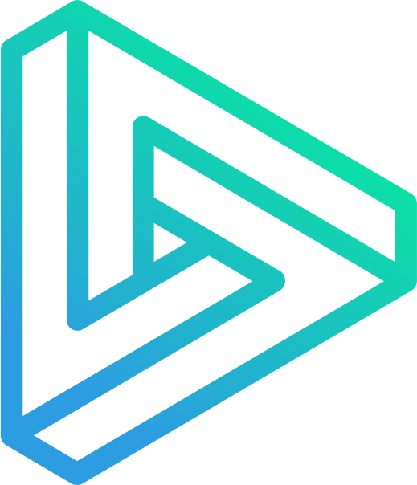

I. Share transaction fee with the DERI holders:
20% of the transaction fee will be put into a pool, in which one can stake DERI to get xDERI. xDERI holders will share the transaction fee income of the pool.
II. Buy back DERI with transaction fee income:
20% of the transaction fee will be put into a DAO fund, which is to regularly buy back DERI from secondary market and burned (i.e. recycled to be mined again).
III. Keep the status quo
20% of the transaction fee will be put into a pool, in which one can stake DERI to get xDERI. xDERI holders will share the transaction fee income of the pool.
II. Buy back DERI with transaction fee income:
20% of the transaction fee will be put into a DAO fund, which is to regularly buy back DERI from secondary market and burned (i.e. recycled to be mined again).
III. Keep the status quo
158,544 DERI
334,253 DERI
0 DERI
Voting ended
Your vote :
Your voting power:
Voting rules:
1. Your voting power is your DERI balance + the corresponding DERI amount of your DERI-USDT SLP balance on Sushiswap as of the deadline. The precise formula is:
Voting Power = balanceOf(DERI) + balanceOf(DERI-USDT SLP) * totalDERIonSushi / totalSupply(DERI-USDT SLP)
2. You can choose any of the 3 chains (ETH/BSC/HECO) to sign your vote by the deadline
3. Voting Deadline = 2021 March 19th 4:00:00AM UTC
4. A snapshot will be taken at the block at deadline and used to calculate the result. That is, if you vote before the deadline but have transferred your DERI or SLP before deadline, it is the balance at the deadline that counts.
1. Your voting power is your DERI balance + the corresponding DERI amount of your DERI-USDT SLP balance on Sushiswap as of the deadline. The precise formula is:
Voting Power = balanceOf(DERI) + balanceOf(DERI-USDT SLP) * totalDERIonSushi / totalSupply(DERI-USDT SLP)
2. You can choose any of the 3 chains (ETH/BSC/HECO) to sign your vote by the deadline
3. Voting Deadline = 2021 March 19th 4:00:00AM UTC
4. A snapshot will be taken at the block at deadline and used to calculate the result. That is, if you vote before the deadline but have transferred your DERI or SLP before deadline, it is the balance at the deadline that counts.